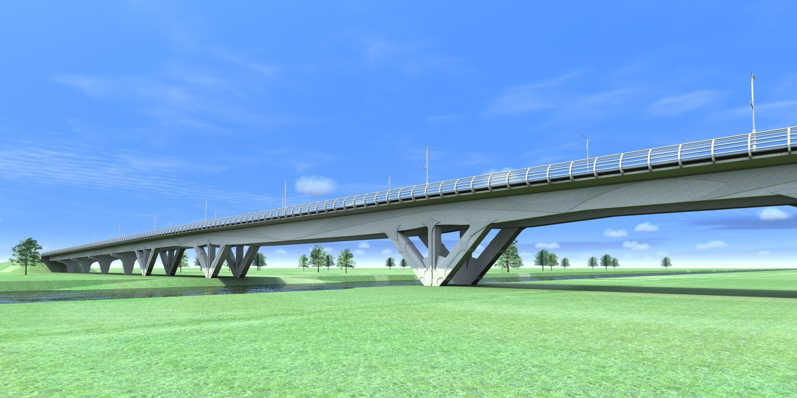

Мостови
aкредитација: 2008., 2013., 2018., 2020.
Грађевински инжењер у интеракцији интуиције, едукације и праксе је изврстан градитељ мостова и зграда. Тако конструктери својој цивилизацији дарују вредна стручна дела. Због тога, драги студенти погледајте другачијим језиком део онога што Вам иначе предајем српским језиком на часовима предмета Конструктивни системи и Мостови на Грађевинском факултету у Суботици.
"Wir müssen wissen, und wir werden wissen”...“Морамо да знамо, знаћемо”
TED: Bridges should be beautiful - Ian Firth. |14:01| ... Мостови треба да буду "и" лепи...
- Institut IMS: Branko Žeželj |17:26|
2. Вежбе
Уводне напомене
Бојан ГЛИГИЋ: Графички задатак-угледни пример (2016.)
Centre for Smart Infrastructure and Construction: "Bridge model updating as a digital twin technology" - Simon Ye |48:32|
Литература
- М.С. Тројановић: Бетонски мостови I, Грађевинска књига, Београд, 1970.
- М.С. Тројановић: Бетонски мостови II, Научна књига, Београд, 1970.
- Б. Стипанић, Д. Буђевац: Челични мостови, Грађевинска књига, Београд, 1989.
- М. Гојковић, Б. Стевановић: Дрвени мостови, Научна књига, Београд, 1985.
- М. Мркоњић, Љ. Влајић: Мостови,Трећи миленијум, Београд, 2003.
- С. Шрам: Градња мостова, Голден маркетинг, Загреб, 2002.
- Д.Д. Милашиновић: Метод коначних трака у теорији конструкција са рачунарским програмима, Студент, Нови Сад, 1994.
- E. Melan: Der Brückenbau, 3. Band-Stahlbrücken, Franz Deuticke, Wien, 1953.
- E. Häseleb: Die Eisernen Brücken, Braunschweig, Druck und Verlag von Friedrich Vieweg und Sohn, 1888.
- G. Mehrtens: Der Deutsche Brückenbau, Springer-Verlag Berlin Heidelberg, 1900.
- G. Mehlhorn: Handbuch Brücken, Springer-Verlag Berlin Heidelberg, 2010.
- G. Mehlhorn, M. Curbach: Handbuch Brücken, Springer Fachmedien Wiesbaden, 2014.
- Pravilnik o tehničkim normativima za određivanje veličina opterećenja mostova, Saveznog zavoda za standardizaciju, Beograd, 1991.
- Pravilnik o tehničkim normativima za određivanje veličina opterećenja mostova i Pravilnik o tehničkim normativima za određivanje veličina opterećenja i kategorizaciju mostova, propusta i ostalih objekata na železničkim prugama, Saveznog zavoda za standardizaciju, Beograd, 1991.
- Design of Bridges - Leonardo da Vinci Pilot Project CZ/02/B/F/PP-134007, Pisa, 2005.
због тога што је и моје интересовање усмерено конструктивним системима зграда и мостова, приложена је и шира литература за информисање и истраживање.

Мостови
| Шифра предмета: | Course Code: |
| 19.ГР3022 | 19.GR3022 |
| ЕСПБ кредит: | ECTS Credits: |
| 6 | 6 |
| Фонд часова: | Number of hours: |
| 2+2 | 2+2 |
[15.01.2026] Predispitne obaveze
[24.12.2025] Obaveštenje
[15.01.2025] Predispitne obaveze
[02.01.2023] Обновљена страница

Напомена:
Прилози су у циљу едукације студената из предмета Мостови. ---------------------------------------------------->Напомена:
Прилози су у циљу едукације студената.
- EdX: The Art of Structural Engineering: Bridges | PrincetonX on edX | Course About Video |03:40|
- Giocoh: Euro Truck Simulator 2 - Volkswagen Bora VR6 |10:39|
- KIWIT4: Fahrt über die Rendsburger Hochbrücke |07:13|
Mostovi
U meni večeras jedna reka
razbila ogromna brda daleka,
muči se, urliče, razmiče klance
i kida svoje zelene lance,
i rije kroz moje srce i peče,
i kroz oči mi kipi i teče.
U tebi večeras ta ista reka
čudno je meka.
I čas je srebrna.
I čas je plava.
U njoj se tišina odslikava.
Svako u sebi reke druge
pod istim mostovima sretne.
Zato su naše sreće i tuge
uvek drukčije istovetne.
Miroslav Mika Antić (1932-1986)